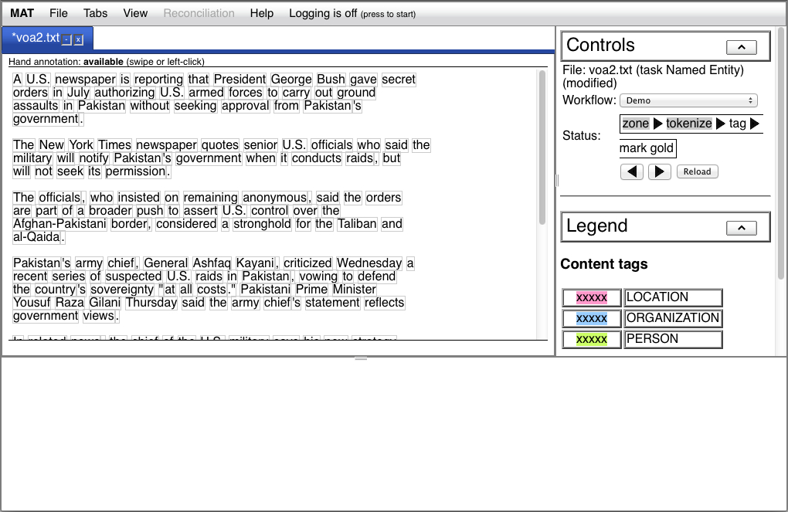
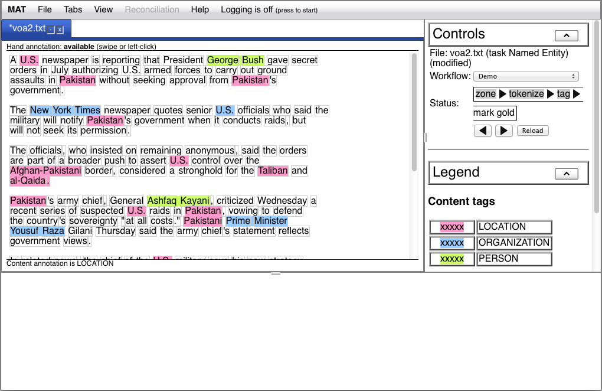
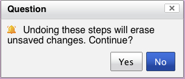

In Tutorial 2, you used a
command-line tool to build a model. In this step, we'll use the UI
to process documents using, among other things, the model you
built. We're going to use the same simple named entity task that
comes with MAT, and we're going to assume that your task is
installed. Like Tutorial 2, we're going to do this tutorial
in file mode.
In this tutorial, we're going to make use of the model we built
in Tutorial 2.
See the section on starting
the UI in Tutorial 1. If you
failed to shut down your Web server at the end of Tutorial 1, shut
it down and restart it now; any models you built in Tutorial 2
won't be visible to the server until you restart it.
Back in Tutorial 1, we used the UI
to prepare a document for hand tagging. Please repeat steps 3 and
4 from Tutorial 1, except you should use the "Demo" workflow
instead of the "Hand annotation" workflow. Once you complete those
steps, your window should look like this:

Note that the zone and tokenize steps are grayed out, indicating
that they've been completed, and that the word units in the
document are delimited by gray boxes.
You may recall from Tutorial 2
that we built a default model
for the Named Entity task. The UI knows about this default model,
and we can use it now.
Press the forward button again. The "tag" label in the Status
line should blink momentarily while the Web server loads the
model, and then you should see a window like this:

In the UI, you can undo an operation. Let's say, for instance,
you've applied the model as in step 3, but you haven't done any
hand correction, and you've subsequently prepared a more accurate
default model, and you want to undo the automated tagging and
apply the newer model.
Press the backward button. The UI will warn you that it's about
to undo unsaved changes:

Press "Yes", and the document will return to the state it was in
at the end of Step 2. Press the forward button again, and the
document will return to the state it was in at the end of Step 3.
At this point, you can hand-correct annotations in the same way
you added and edited annotations in Tutorial
1. You can also save the document.
If you're not planning on doing any other tutorials, and you
don't want the "Named Entity" task hanging around, remove it as
shown in the final step of Tutorial 1.